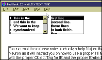
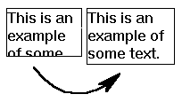
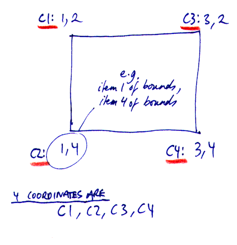

Australian Toolbook User Group


Scrolling / Colouring / Autosizing / Positioning fields
Scrolling two fields at the same time Solution by Warren Rhude and Omarfadly

Question: I need to scroll a text field from script but the field in question does not have a scroll bar. Is there any way to do this because our usability studies have shown that scroll bars are too cumbersome for novice computer users.
Answer: Try this command :
increment scroll of <Field Name> and
decrement scroll of <Field Name>
Here is an example of having three fields scroll together
to handle textscrolled set scroll of field "F2" to scroll of field "F1" set scroll of field "F3" to scroll of field "F1" end
When field "F1" is scrolled the others should scroll also!
Keeping text Tables in fields correctly aligned using tabs Solution by John R. Hall
Question: I have problem... in my field is text and numeric data in straight lines and it's important to keep them in their own colums. When i change resolution lines goes messy, what can i do?
before (1024 x 768 courier) mister Smith 3453,45 3453,45 mister Jones 1232,34 4233,45 after (640 x 480 still courier...) mister Smith 3453,45 3453,45 Mister Jones 1232,34 4233,45
Answer: Experiment with your tab interval. Usually you can modify the tab setting for the paragraph until it looks the same in both resolutions. In the 640 res, the font is so big that it goes beyond the threshold for the first tab stop and jumps to the second. If you change tab stops from .4 to .5 or something along those lines, it will often solve the problem. Same thing happens in word processors by the way.
Dynamically changing field size (font independent)
Question: I would like to create a field that changes it size depending on how much text is in the field. The field should increase it's size when the user types in text and shrink when the user deletes text. The script should consider font, fontsize and fontstyle or even better should be font independent. I experimented a little with the textunderflow property but I didn't get too far with it.

I suggest you build a while loop around the textOverFlow property, something like this....
-- change these constants to suit your font
X_delta = 60
Y_delta = 30
while textOverFlow of field "foo" > 0
item 1 of size of field "foo" = \
item 1 of size of field "foo" + X_delta
item 2 of size of field "foo" = \
item 2 of size of field "foo" + Y_delta
end
Try the following script. You will have to write code yourself for operations like pasting and cutting, deleting text by pressing backspace etc. Send Init to the (record)field before enabling input, this will set the initial height. This routine will use the default font for the field, I guess that will do. Otherwise you will have to check what the maximum fontsize of the text in the field is.
to handle Init
l_sls = sysLockscreen
sysLockscreen = true
l_rtf = richtext of self
text of self = "A"
scroll of self = 0
item 1 of size of self = 100
item 2 of size of self = 10
while textoverflow of self <> 0
increment item 2 of size of self by 10
end while
richtext of self = l_rtf
scroll of self = 0
while textoverflow of self <> 0
increment item 3 of bounds of self by 300
end while
sysLockscreen = l_sls
end
to handle KeyChar p_key
forward
set scroll of self to 0
if p_key = keyBackspace
-- decrease size of field
else
if textoverflow of self <> 0
send AdjustSize
end if
end if
end KeyChar
to handle AdjustSize
l_sls = sysLockscreen
sysLockscreen = true
scroll of self = 0
while textoverflow of self <> 0
increment item 1 of size of self by 300
end while
end AdjustSize
-- a field does not receive the paste message, so you have to place the
next handler higher in the object hierarchy.
to handle Paste
if 'focus is a resizable field'
send AdjustSize to target
end
end
Try this. This is a sample script that I use often as a user message in a pop-up viewer. In this example, I created a recordField on a background page. I put this script on the background page. The size of this particular field if 3500,300. You can fix one dimension of the field and let the other grow, for example. You will have to play around with it to fit your exact needs. Contact me if you like. Good luck.
to handle enterPage
sysLockScreen = true
scroll of recordField "message" = 0
set size of recordField "message" to 3500,300
if textOverFlow of recordField "message" > 0
do
increment item 4 of \
bounds of recordField \
"message" by 150
until textOverFlow of \
recordField "message" = 0
end if
increment item 4 of bounds of \
recordField "message" by 50
size of this background = size of \
recordField "message"
sysLockScreen = false
end
Selecting the the topmost field from many fields Solution by Claude Ostyn
Question: How would one phrase a script that will select, among all the VISIBLE objects on the page, the topmost field?
Answer: Easy with Multimedia ToolBook 3.0:
get GetObjectList(this page,"field",false)
if it <> null
step i from itemCount(it) to 1 by -1
if visible of item i of it
select item i of it
break step
end
end
end
Coloring text as it is being read
Question: In my app, I have some sentences which are read by the computer. I've saved the sound of the complete sentence as a single wave file and the text in a record field. Is it possible to synchronize the color change with the reading as can be seen in several commercial titles?
I've done this before quite simply by converting the text to a series of hotwords and naming them the same as the clip to which the correlate. Then, you set the color attribute of the hotword (though the book hotword color remains none). Works pretty nicely.
Thanks John for your suggestion. But in my case, I have a single wav file for the entire sentence. Let me give an example to give more details.
I have a record field with text "The blue whale is the biggest animal". I also have a .wav file as a clip which has the voice of the entire sentence.
Now when the user presses a button, the wav clip (containing the voice) is played. When the wav file has been payed up to "The blue whale ..", the colour of the three words, "The", "blue" and "whale" must be changed to another color. When the wav clip has played upto "The blue whale is ..", the word "is" must *also* be colored.
That is, the words in the sentence (in the record field) must be coloured *synchronized* with the wav clip. Is there any method to do this?
I think John is on the right track with you. If you go into the clip you can record the timing on the clip for each word. Then in a script you could have the "hotword" show up as a different color. This could also be done by making your sentence then placing a little field with only the word you want in the new color you want on top of the word in the original sentence. the script would tell those fields with the single words to hide and show in relation to the timing location for the wave script. Does this make sense? Try it out some and see what you get.
You can use something like this :
strokecolor of word 2 of text of \ field "myField" = Blue strokecolor of words 5 to 8 of \ text of field "myField" = Blue
For the synchronization you can use timers.
Then you're probably going to have to continually check the mmposition of the clip. I'd create a stack with the list of hotwords and the in point (framenumber) of the clip where the hotword should change. Use a do/until or while loop to check the frame number. When it hits or exceeds the change point frame number, change the old hotword style to none and the new one to color then pop the new values. Seems processor intensive but I bet it would work.
Showing a field and then making it disappear after a time Solution by Jeffrey Rhodes
Question: Has anyone implemented a timed pop-up in ToolBook?
Answer: The following code shows a field "LPlans" after one second of staying on a particular button and not clicking on it.
to handle mouseEnter enteredButton of this page = true enteredTime of this page = sysDate -- needs to be formatted as seconds end mouseEnter to handle mouseLeave enteredButton of this page = false hide field "LPlans" -- this is the "balloon help" end mouseLeave to handle idle if (enteredButton of this page AND \ (sysDate - enteredTime of this page >= 1)) -- has been 1 second. note: if you want -- a smaller time interval, I'd recommend -- using a counter here instead of sysDate show field "LPlans" -- balloon help end if forward end idle to handle buttonClick enteredButton of this page = false -- rest of script end buttonClick
Determining the caretLocation of the text cursor - in pageUnits Solution by Butch Carino, Asymetrix
Question: How can I get the exact position of the caretLocation in pageUnits? I want to scroll viewer so that the actual position of the caratLocation keeps visible even in field, which are larger than the actuall screen size.
Answer: What do you need to know the pageUnits? The caretlocation is relative to the field rather than to the page. Here is a simple code that will increment the caretLocation as you scroll down a field that has a list of items. You need to make modifications for all cases.
to handle textscrolled get caretlocation caretlocation = item 1 of it + 1,item 2 of it put it end
Calculating the 'corner' coordinates of a toolbook object Solution by Andy Bulka
We all know that any Toolbook object is visually specified by 4 coordiantes. The leftmost X position, the rightmost X bounds etc. The 'bounds' property representes this information as the list:
x1,y1,x2,y2
For example the field "results" may have the bounds property as the list of four numbers: 6345,1365,8115,2190
On a project the other day, I needed to be able to get at the left bottom coordinate of any object. And then I needed to get at the bottom rightmost coordinate. How? Well, all I needed to do was rearrange the information I was getting in the 'bounds' property into an appropriate pair of numbers.

The following script uses the 'bounds' property information and sets the variables c1 c2 c3 and c4 to the four corners of the object:
-- put this script inside the object
local c1,c2,c3,c4 -- Determine the 4 coordinates get item 1 of my bounds item 1 of c1 = it item 1 of c2 = it get item 2 of my bounds item 2 of c1 = it item 2 of c3 = it get item 3 of my bounds item 1 of c3 = it item 1 of c4 = it get item 4 of my bounds item 2 of c2 = it item 2 of c4 = it request c1 &crlf& c2 &crlf& c3 &crlf& c4
 Editor's Note:
Editor's Note:
The value 'c1' calculated above is actually the same as the 'position' property viz. the top left bounds of a Toolbook object. Object in this context refers to a Toolbook button, graphic, rectangle, field etc.
Determining the screen position of the selectedTextLine of a field. Solution by David Kester
Question: I need to find a way to get the location in Page Units or Device Units for the selected item in a Single Select ListBox. I can't find a way to do this using normal ToolBook variables or methods.
I would be willing to do a Windows API call (LB_GETITEMRECT) for this, but I would also need to obtain the Windows Handle for the ListBox, which I don't know how to find, either. Does anyone have any suggestions?
Answer: Here is something I came up with that gives a close position.
to get selectPosition FID
local retValue
step y from item 2 of bounds of FID \
to item 4 of bounds of FID by 50
set temp to (item 1 of bounds of \
FID+50&","&y)
if item 1 of textFromPoint(temp) \
of FID = selectedTextLines of FID
set retValue to temp
break step
end
end
return(retValue)
end
This just calls the function and puts it in the command window.
to handle buttonUP
put selectPosition(field "foo")
end
Question: I would like to get the actual size of a text (height and width) that has a certain font and a certain size (could be any font and any size). (BTW, the popTextGetBounds() function uses font face Arial only, so its of no help to me)
Answer: Here's a trick that is in the Sample Library included with ToolBook:
Make the text a hotword (select the text, then send createHotword), then get the bounds of the hotword. Then you can remove the hotword when you're done.
To access thousands more tips offline - download Toolbook Knowledge Nuggets